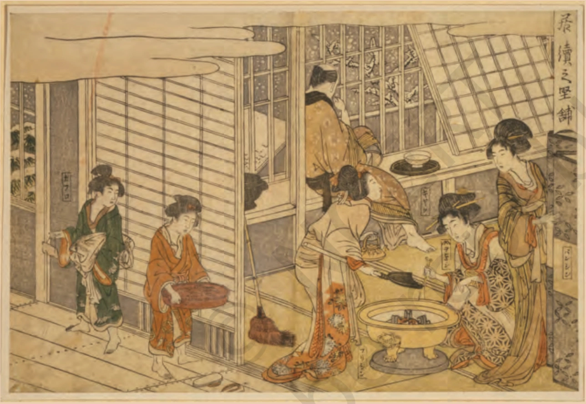
• क्या दर्शाता है: 16वीं सदी की यूरोपीय प्रिंटिंग प्रेस की आंतरिक गतिविधि। इसमें कंपोज़िटर अक्षरों को सांचों में सजा रहे हैं और प्रेसमैन कागजों पर स्याही दबाकर छपाई कर रहे हैं।
• ऐतिहासिक महत्व: यह चित्र हाथ से लिखी जाने वाली नाजुक पांडुलिपियों से यांत्रिक औद्योगिक छपाई में हुए क्रांतिकारी बदलाव का साक्ष्य प्रस्तुत करता है।
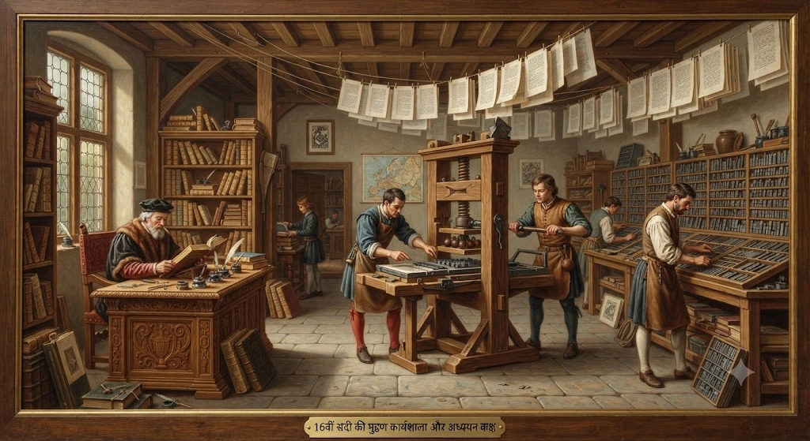
• क्या दर्शाता है: 16वीं सदी की एक मुद्रण कार्यशाला जहाँ सीसे (Lead) के टाइपरैक, लकड़ी का स्क्रू प्रेस और कागजों को सुखाने के तार लगे हैं।
• ऐतिहासिक महत्व: यह दर्शाता है कि मुद्रण केवल एक व्यक्ति का काम नहीं था, बल्कि यह एक सुव्यवस्थित कारखाना उद्योग बन चुका था।
आज हम मुद्रित (Printed) दुनिया के बिना अपने जीवन की कल्पना नहीं कर सकते। लेकिन मुद्रण तकनीक का भी अपना एक समृद्ध इतिहास रहा है। दुनिया की सबसे पहली मुद्रण तकनीक चीन, जापान और कोरिया में विकसित हुई। यह हाथ से छपाई की 'काठ के तख्ते' (Woodblock Printing) वाली प्रणाली थी।
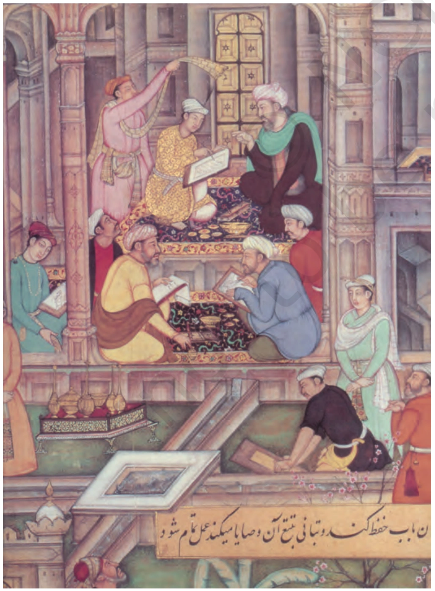
• क्या दर्शाता है: 16वीं सदी की शाही कार्यशाला जहाँ सुलेखक (Calligrapher), चित्रकार और जिल्दसाज़ (Bookbinder) एक ही हस्तलिखित पांडुलिपि को तैयार कर रहे हैं।
• ऐतिहासिक महत्व: मुद्रण से पहले किताबें बहुत महंगी, नाजुक और समय लेने वाली होती थीं। एक किताब तैयार करने में महीनों लगते थे, इसलिए वे केवल राजाओं और अमीरों तक सीमित थीं।
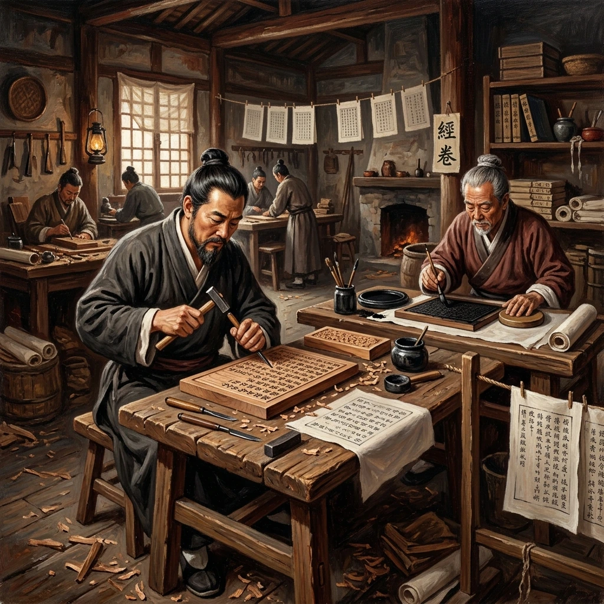
• क्या दर्शाता है: 8वीं सदी के चीन में लकड़ी के तख्ते (Woodblock) पर अक्षरों को उकेर कर स्याही से 'अकॉर्डियन पुस्तक' (Accordion Book) की छपाई का दृश्य।
• ऐतिहासिक महत्व: चीन दुनिया में छपाई तकनीक का पहला केंद्र था। चीनी साम्राज्य की सिविल सेवा परीक्षाओं के लिए लाखों की संख्या में किताबें इसी विधि से छापी जाती थीं।
- स्याही रगड़कर छपाई: 594 ईस्वी से चीन में लकड़ी के तख्तों पर स्याही लगाकर कागज पर छापा जाता था। कागज पतला और छिद्रयुक्त होने के कारण पन्नों के केवल एक तरफ छपाई होती थी। इन पन्नों को मोड़कर किनारे से सिल दिया जाता था, जिसे 'अकॉर्डियन पुस्तक' (Accordion Book) कहा जाता था।
- सिविल सेवा परीक्षाएं: चीन की साम्राज्यी सरकार किताबों की सबसे बड़ी उत्पादक थी। सिविल सेवा परीक्षाओं में बैठने वाले उम्मीदवारों की भारी संख्या के लिए बड़े पैमाने पर किताबें छापी जाती थीं।
- शहरी संस्कृति और नया पाठक वर्ग: 16वीं सदी तक चीन के शहरों में व्यापारी, महिलाएं और अमीर लोग पढ़ने का आनंद लेने लगे। कहानियां, कविताएं और आत्मकथाएं लोकप्रिय हो गईं। 19वीं सदी के अंत में शंघाई पश्चिमी मुद्रण तकनीक का प्रमुख केंद्र बन गया।
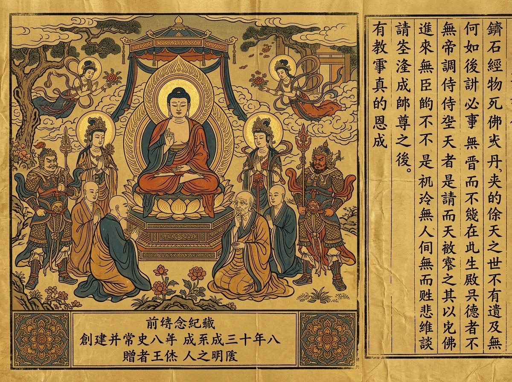
• क्या दर्शाता है: 868 ईस्वी में जापान में मुद्रित बौद्ध धर्मग्रंथ 'डायमंड सूत्र' (Diamond Sutra) का पन्ना, जिसमें काठ-चित्र और चीनी-जापानी लिपि उत्कीर्ण है।
• ऐतिहासिक महत्व: यह जापान की सबसे पुरानी मुद्रित पुस्तक मानी जाती है। इसमें 6 पृष्ठ के पाठ और चित्र शामिल हैं, जो पूर्वी एशिया में बौद्ध मुद्रण के प्रसार का प्रतीक है।
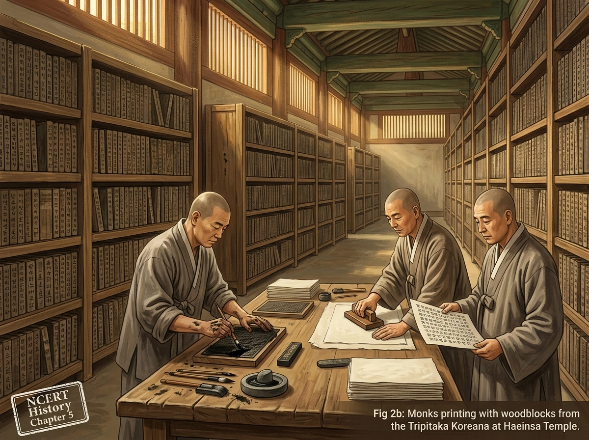
• क्या दर्शाता है: 13वीं सदी के मध्य कोरिया में तैयार किए गए 80,000 से अधिक काठ के ब्लॉकों का संग्रह 'ट्रिपिटक कोरियाना' (Tripitaka Koreana)।
• ऐतिहासिक महत्व: यह यूनेस्को की विश्व धरोहर सूची में शामिल है और कोरियाई मुद्रण कला की सर्वोच्च तकनीकी निपुणता को दर्शाता है।
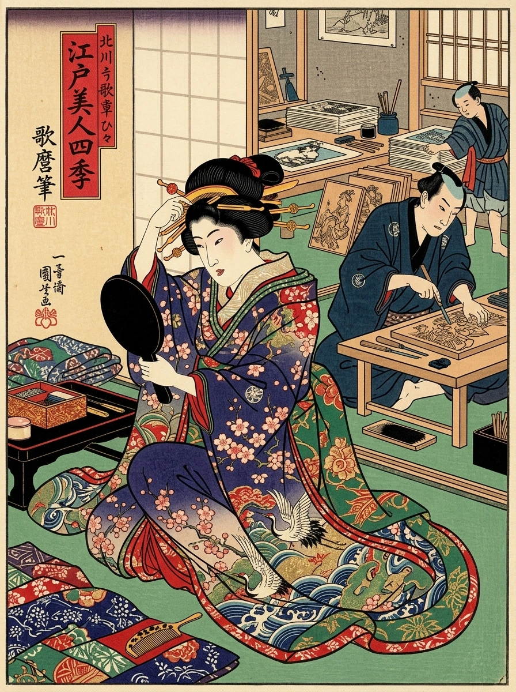
• क्या दर्शाता है: 18वीं सदी के जापानी कलाकार कितागावा उतामारो द्वारा निर्मित 'उकियो' (Ukiyo - तैरती दुनिया के चित्र) शैली का वुडकट प्रिंट।
• ऐतिहासिक महत्व: इस कला शैली ने आम शहरी जीवन, महिलाओं और कलाकारों के दृश्यों को चित्रित किया। बाद में इसने यूरोप के मानेट और वैन गॉग जैसे महान चित्रकारों को भी प्रभावित किया।
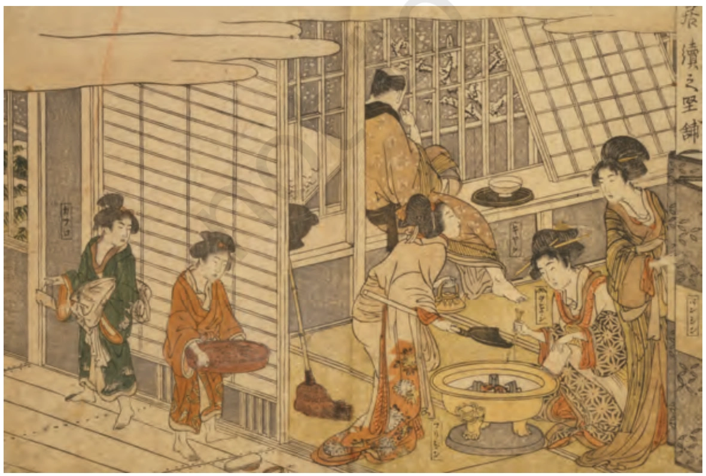
• क्या दर्शाता है: जापानी शहरी जीवन का 18वीं सदी का काठ-चित्र जिसमें सुबह के समय घर के कामों में व्यस्त महिलाओं को दिखाया गया है।
• ऐतिहासिक महत्व: यह साबित करता है कि जापान में मुद्रण कला केवल धर्मशास्त्र तक सीमित नहीं थी, बल्कि रोजमर्रा के लोक जीवन का हिस्सा बन चुकी थी।
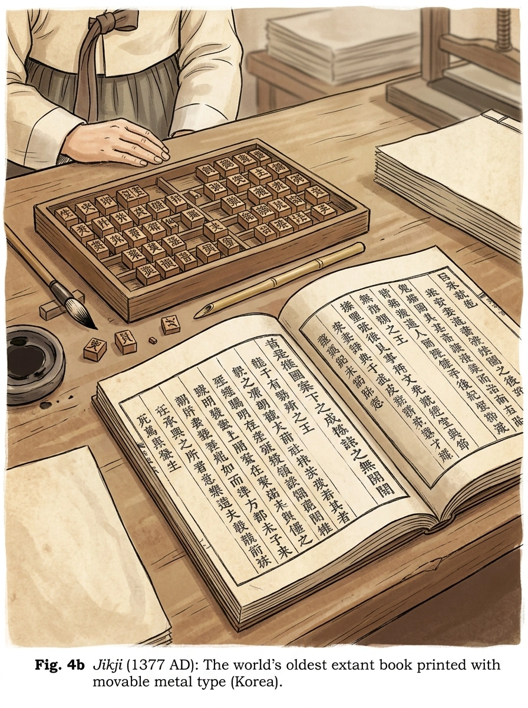
• क्या दर्शाता है: धातु के चल टाइपों (Movable Metal Types) द्वारा 1377 ईस्वी में कोरिया में मुद्रित बौद्ध ग्रंथ 'जिकजी' (Jikji)।
• ऐतिहासिक महत्व: यह गुटेनबर्ग की बाइबल (1455) से भी पहले धातु के टाइप से छपी दुनिया की सबसे प्राचीनतम जीवित पुस्तक मानी जाती है।
• बौद्ध प्रचारक: चीनी बौद्ध प्रचारकों ने 768-770 ईस्वी के आसपास जापान में छपाई की तकनीक पहुँचाई।
• डायमंड सूत्र (Diamond Sutra): 868 ईस्वी में छपी 'डायमंड सूत्र' जापान की सबसे पुरानी मुद्रित पुस्तक है, जिसमें 6 पृष्ठ और काठ-चित्र हैं।
• उकियो (Ukiyo): 18वीं सदी में ईदो (आधुनिक टोक्यो) में कितागावा उतामारो (Kitagawa Utamaro) ने 'उकियो' (तैरती दुनिया के दृश्य) नामक एक नई कला शैली विकसित की, जिसने शहरी जीवन, महिलाओं और कलाकारों के जीवन को रेखांकित किया।
सिल्क रूट (रेशम मार्ग) से चीनी रेशम और मसालों के साथ-साथ चीनी कागज भी यूरोप पहुँचा। इससे यूरोप में भी पांडुलिपियां लिखना आसान हो गया।
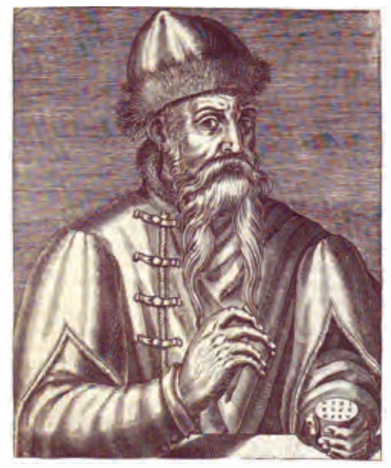
• क्या दर्शाता है: जर्मनी के स्ट्रैसबर्ग निवासी योहान गुटेनबर्ग (Johann Gutenberg) का ऐतिहासिक पोट्रेट चित्र।
• ऐतिहासिक महत्व: गुटेनबर्ग ने 1430-1448 के बीच यूरोप में पहले यांत्रिक प्रिंटिंग प्रेस का आविष्कार किया जिसने ज्ञान के प्रसार में ऐतिहासिक क्रांति ला दी।
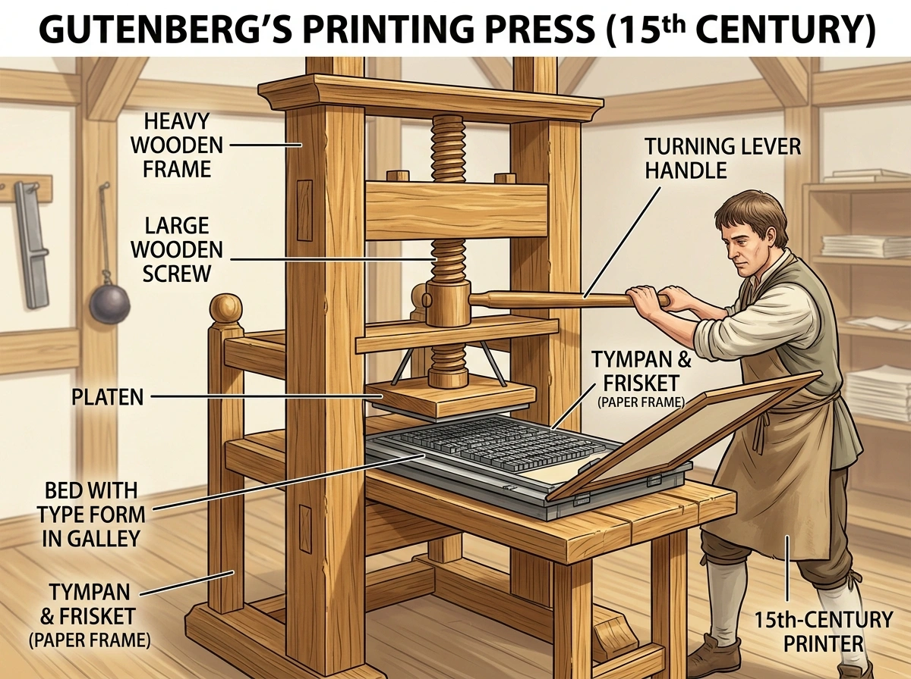
• क्या दर्शाता है: गुटेनबर्ग का प्रिंटिंग प्रेस, जिसे उन्होंने जैतून पेरने वाले स्क्रू प्रेस के आधार पर ढाला था। इसमें सीसे की धातुओं के सांचे (Lead Types) इस्तेमाल होते थे।
• ऐतिहासिक महत्व: इस प्रेस ने छपाई की गति को सैकड़ों गुना बढ़ा दिया और पांडुलिपियों के एकाधिकार को समाप्त कर दिया।
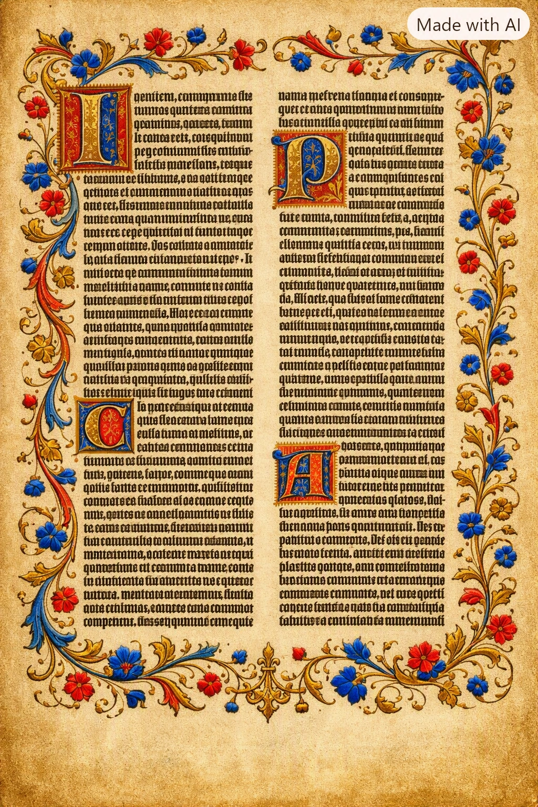
• क्या दर्शाता है: 1455 में गुटेनबर्ग द्वारा छापी गई प्रसिद्ध 42-लाइन बाइबल (Gutenberg Bible) के अलंकृत पन्ने।
• ऐतिहासिक महत्व: यह यूरोप की पहली मुद्रित पुस्तक थी। इसकी 180 प्रतियां बनाने में 3 साल लगे थे। हाशियों पर हाथ से रंगीन बॉर्डर बनाए जाते थे ताकि वे पांडुलिपियों जैसी सुंदर दिखें।
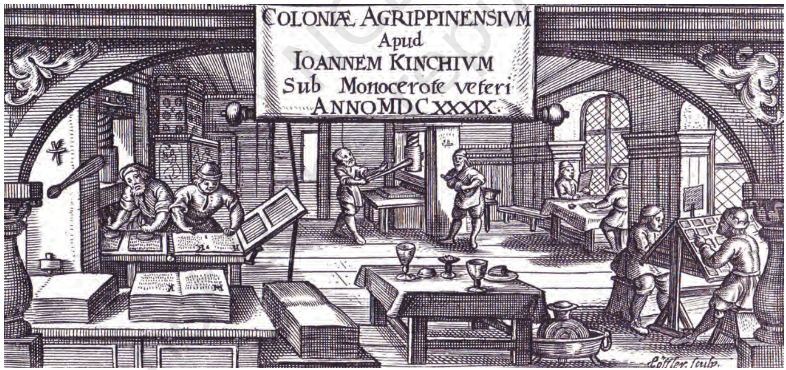
• क्या दर्शाता है: 16वीं सदी के यूरोपीय प्रिंटिंग प्रेस की चहल-पहल - टाइपरैक से अक्षर चुनना, प्रेसमैन द्वारा दबाव देना और पन्नों को सुखाना।
• ऐतिहासिक महत्व: यह दिखाता है कि 15वीं सदी के उत्तरार्ध में यूरोप में 2 करोड़ से अधिक मुद्रित किताबें बाजार में आ चुकी थीं।
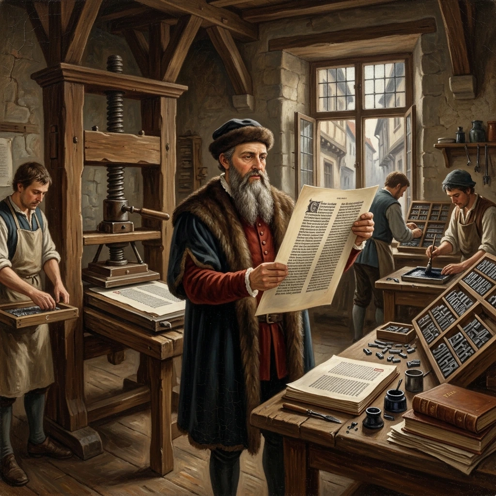
• क्या दर्शाता है: योहान गुटेनबर्ग का 1455 का वर्कशॉप चित्र, जिसमें धातु के टाइप, स्क्रू प्रेस और ताज़ा छपी बाइबल की शीट दिखाई दे रही है।
• ऐतिहासिक महत्व: इसने सूचना प्रसार का लोकतंत्रीकरण किया और पश्चिमी सभ्यता में बौद्धिक पुनर्जागरण (Renaissance) को जन्म दिया।
1. जैतून प्रेस से प्रेरणा: जर्मनी के स्ट्रैसबर्ग में बड़े हुए गुटेनबर्ग ने जैतून और अंगूर पेरने की मशीनों को देखकर प्रिंटिंग प्रेस का ढांचा तैयार किया।
2. धातु के टाइप (Lead Type): उन्होंने सीसे (Lead) और अन्य धातुओं के सांचे बनाकर 'मूवेबल टाइप' (Movable Metal Type) तकनीक विकसित की।
3. पहली मुद्रित पुस्तक (गुटेनबर्ग बाइबल): 1455 के आसपास उन्होंने पहली पुस्तक **बाइबल (Gutenberg Bible)** छापी। इसकी 180 प्रतियां छापने में 3 साल लगे, जो उस समय के हिसाब से बहुत तेज गति थी।
4. हाथ का स्पर्श: शुरुआती छपी किताबें भी पांडुलिपियों जैसी दिखती थीं। हाशियों पर हाथ से रंगीन फूल-पत्तियां और चित्र बनाए जाते थे।
प्रिंट क्रांति केवल किताबें छापने का नया तरीका नहीं थी, बल्कि इसने लोगों की सोच, चेतना और सूचनाओं के साथ उनके रिश्ते को पूरी तरह बदल दिया।
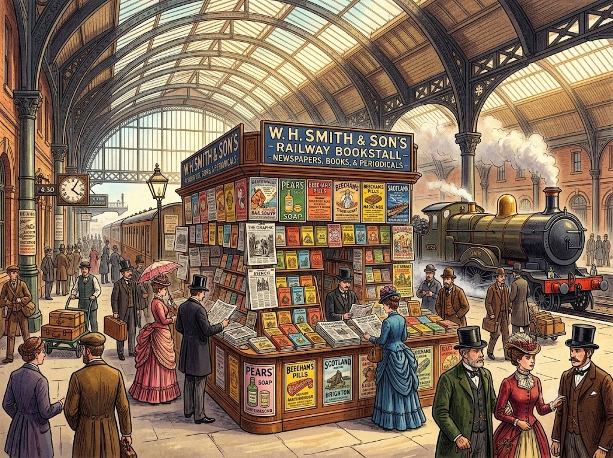
• क्या दर्शाता है: 1739 का एक रूपकात्मक चित्र जिसमें मुद्रण (L'Imprimerie) को एक देवी के रूप में दिखाया गया है जो स्वर्ग से ज्ञान की रोशनी धरती पर लाती है।
• ऐतिहासिक महत्व: 18वीं सदी के ज्ञानोदय (Enlightenment) काल में प्रिंटिंग प्रेस को अज्ञानता और अंधविश्वास को मिटाने वाला ईश्वर का उपहार माना गया।
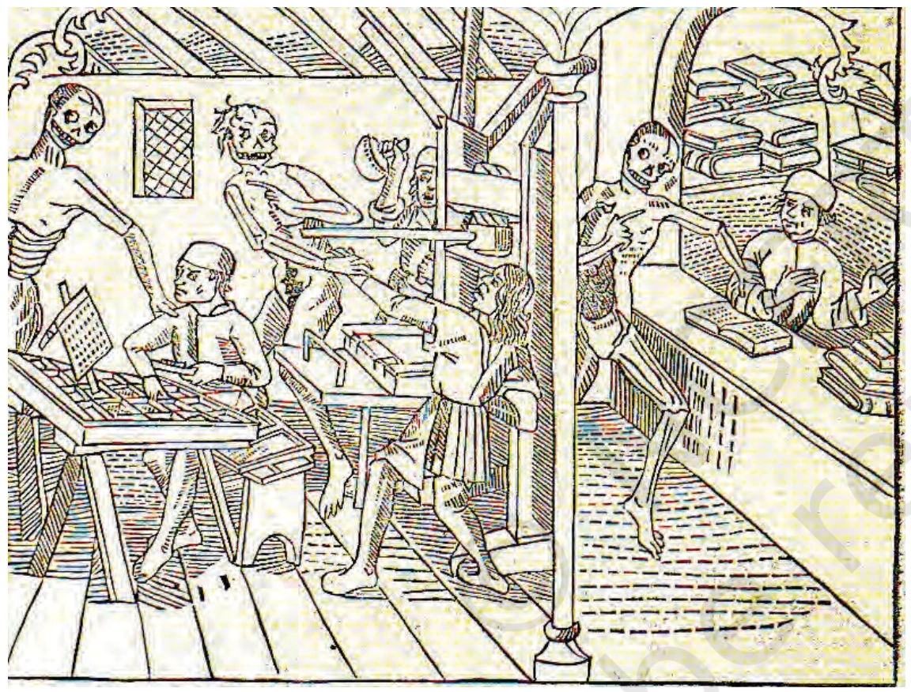
• क्या दर्शाता है: 16वीं सदी का एक वुडकट चित्र जिसमें कंकाल (मृत्यु) को प्रिंटिंग प्रेस के इर्द-गिर्द मुद्रकों के साथ नाचते हुए दिखाया गया है।
• ऐतिहासिक महत्व: यह प्रिंट के अनियंत्रित प्रसार से कैथोलिक चर्च और रूढ़िवादी ताकतों के मन में पैदा हुए भय व डर का प्रतीक है।
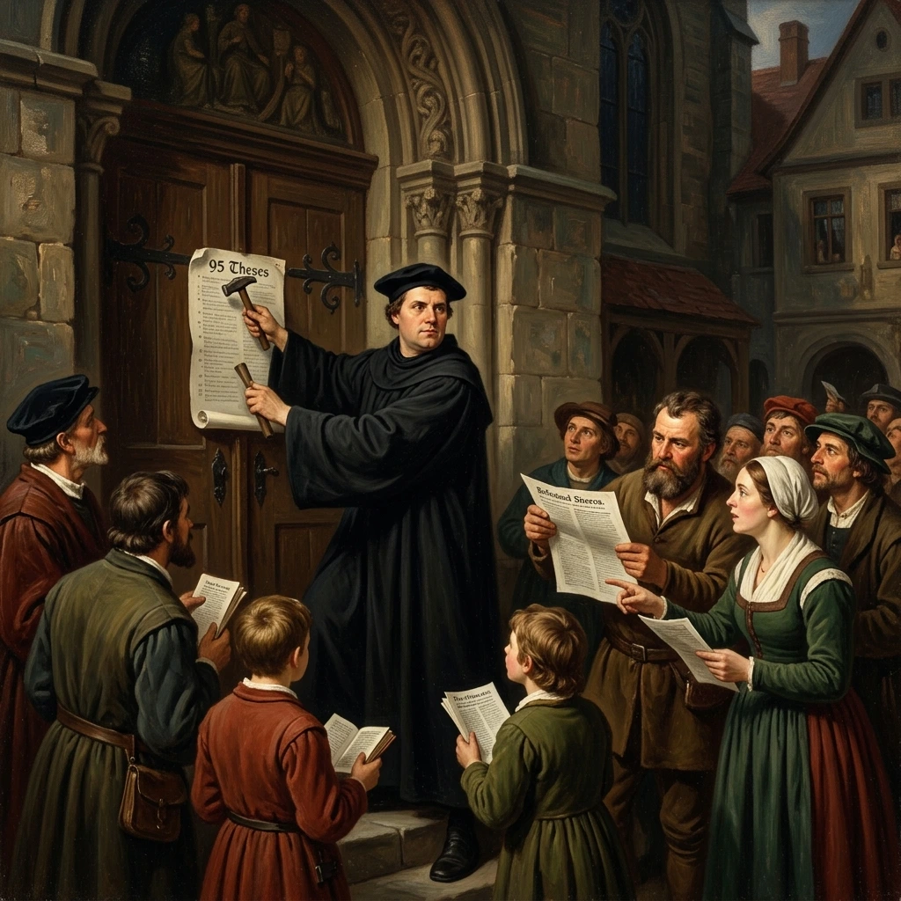
• क्या दर्शाता है: 1517 में जर्मन धर्मसुधारक मार्टिन लूथर द्वारा विटेनबर्ग चर्च के दरवाजे पर अपने 95 वक्तव्य (95 Theses) चिपकाने का ऐतिहासिक दृश्य।
• ऐतिहासिक महत्व: लूथर के पर्चों की हजारों प्रतियां छपीं, जिसने कैथोलिक चर्च को हिला दिया और प्रोटेस्टेंट धर्मसुधार (Protestant Reformation) की शुरुआत की।
• 95 वक्तव्य (95 Theses - 1517): जर्मन धर्मसुधारक मार्टिन लूथर ने कैथोलिक चर्च की कुरीतियों की आलोचना करते हुए 95 वक्तव्य लिखे और विटेनबर्ग के चर्च के दरवाजे पर टांग दिए।
• प्रिंट का योगदान: लूथर के लेखों की हजारों प्रतियां छपीं और लोगों ने उन्हें बड़े पैमाने पर पढ़ा। इससे कैथोलिक चर्च में विभाजन हुआ और प्रोटेस्टेंट धर्मसुधार (Protestant Reformation) की शुरुआत हुई।
• लूथर का कथन: लूथर ने प्रिंट की सराहना करते हुए कहा - "मुद्रण ईश्वर की दी हुई महानतम देन है, सबसे बड़ा उपहार है।"
• मेनोकियो और प्रतिबंधित किताबों की सूची (Index 1558): इटली के एक किसान मेनोकियो (Menocchio) ने बाइबल के अर्थ की नई व्याख्या की। इससे बौखलाकर कैथोलिक चर्च ने 1558 से 'प्रतिबंधित किताबों की सूची' (Index of Prohibited Books) रखनी शुरू कर दी।
18वीं सदी में यूरोप के अधिकांश हिस्सों में साक्षरता दर 60% से 80% तक पहुँच गई। इसे 'पढ़ने का जुनून' (Reading Mania) कहा गया।
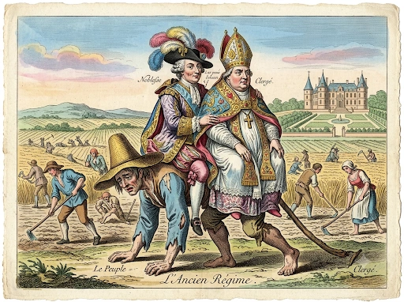
•
• ऐतिहासिक महत्व: प्रिंट माध्यम से प्रसारित ऐसे कार्टूनों ने आम जनता में राजशाही व चर्च की निरंकुशता के खिलाफ चेतना जगाई और क्रांति का आधार तैयार किया।
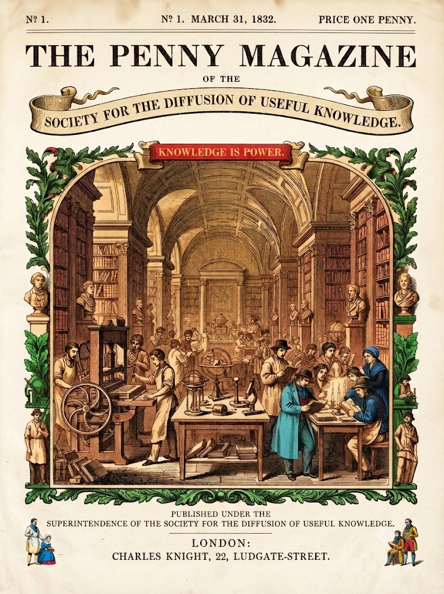
• क्या दर्शाता है: 19वीं सदी के इंग्लैंड में एक पैसे (Penny) में बिकने वाली 'पेनी मैगजीन' (Penny Magazine) का मुख्य पृष्ठ।
• ऐतिहासिक महत्व: इन सस्ती पत्रिकाओं ने मजदूरों, महिलाओं और नए पाठकों को ज्ञान और मनोरंजन सुलभ कराया।

• क्या दर्शाता है: 1874 के इंग्लैंड के एक रेलवे स्टेशन का लिथोग्राफ चित्र जहाँ दीवारों पर अनेक मुद्रित विज्ञापन चिपके हुए हैं।
• ऐतिहासिक महत्व: यह दर्शाता है कि मुद्रण संस्कृति का उपयोग अब व्यापारिक प्रचार और उपभोक्ता संस्कृति के निर्माण में व्यापक रूप से होने लगा था।
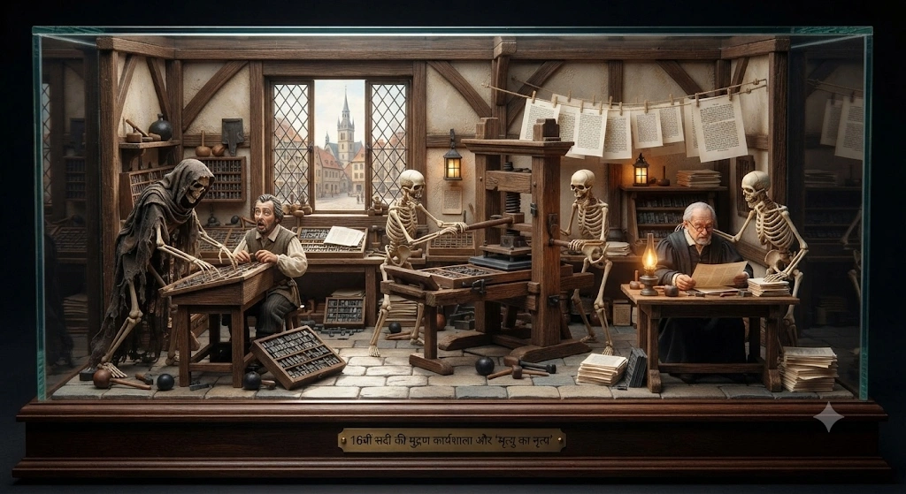
• क्या दर्शाता है: 16वीं सदी की एक ऐतिहासिक मुद्रण कार्यशाला का 3D कांच-आवरण डायोरामा (Diorama), जिसमें लकड़ी के प्रिंटिंग प्रेस, टाइप-सेटर (कंपोज़ीटर), प्रूफ-रीडर और उनके साथ प्रतीकात्मक रूप से नाचते कंकाल (Danse Macabre) दर्शाए गए हैं।
• ऐतिहासिक महत्व: यह कलात्मक मॉडल 16वीं सदी की छपाई तकनीक की जटिलता तथा उस काल में प्रिंट के विस्फोटक प्रसार से तत्कालीन रूढ़िवादी समाज व चर्च में फैली हलचल और मृत्यु के रूपक को जीवंत बनाता है।
1. पॉकेट बुक्स और चैपबुक्स (Chapbooks): इंग्लैंड में एक पैसे में बिकने वाली 'पेनी चैपबुक्स' (Penny Chapbooks) और फ्रांस में नीले आवरण वाली 'बिब्लियोथेक ब्लू' (Bibliothèque Bleue) बहुत सस्ती बिकती थीं जिन्हें गरीब भी खरीद सकते थे।
2. लुई-सेबेस्टियन मर्सिये का कथन: फ्रांस के उपन्यासकार मर्सिये ने कहा - "छापाखाना प्रगति का सबसे ताकतवर औजार है और इससे पैदा हुई विचारों की तरंग निरंकुशवाद को उड़ा देगी। हे निरंकुश शासकों! अब तुम्हारे कांपने का समय आ गया है।"
3. मुद्रण संस्कृति और फ्रांसीसी क्रांति: मुद्रण ने परंपरावादी सोच पर सवाल उठाए, तर्कवाद का प्रसार किया और व्यंग्य चित्रों (Caricatures) के माध्यम से राजशाही के विलासिता पूर्ण जीवन का मजाक उड़ाया, जिसने 1789 की फ्रांसीसी क्रांति की पृष्ठभूमि तैयार की।
छपाई की तकनीक आने से पहले भारत में पांडुलिपियों की एक बहुत पुरानी और समृद्ध परंपरा थी।
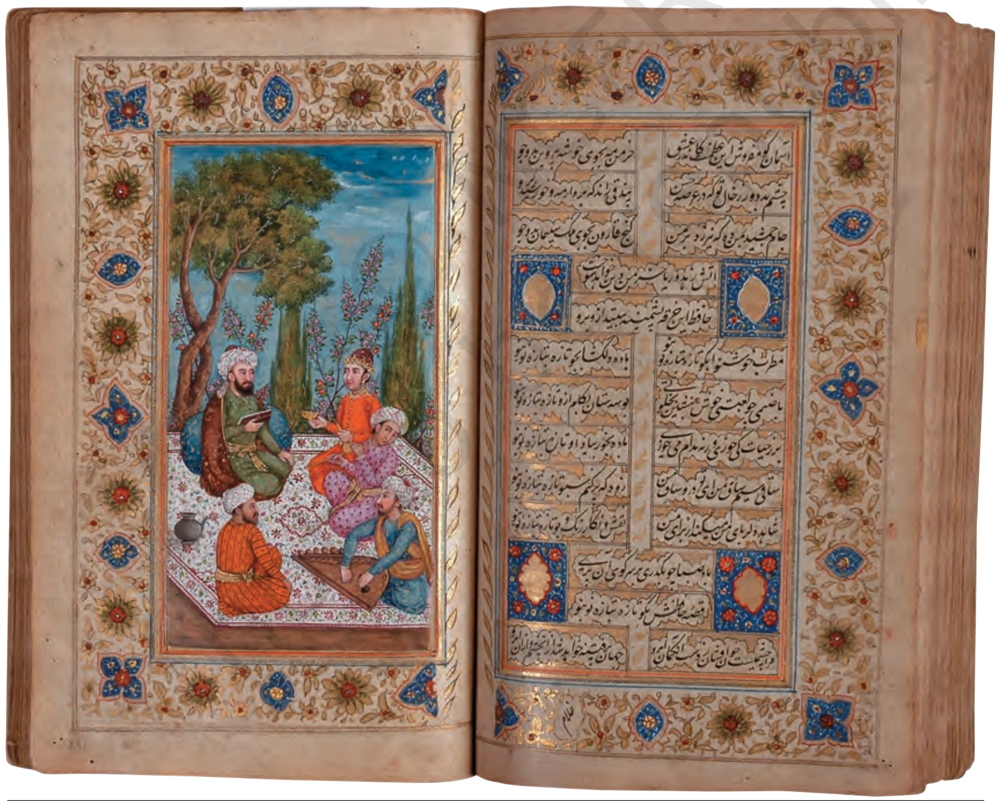
• क्या दर्शाता है: भारत की पारंपरिक हस्तलिखित पांडुलिपि के अलंकृत पन्ने।
• ऐतिहासिक महत्व: भारत में छपाई आने से पहले ताड़ के पत्तों और हाथ के बने कागजों पर सुलेखकों द्वारा ग्रंथ लिखे जाते थे। वे बहुत सुंदर परंतु अत्यधिक नाजुक और महंगी होती थीं।
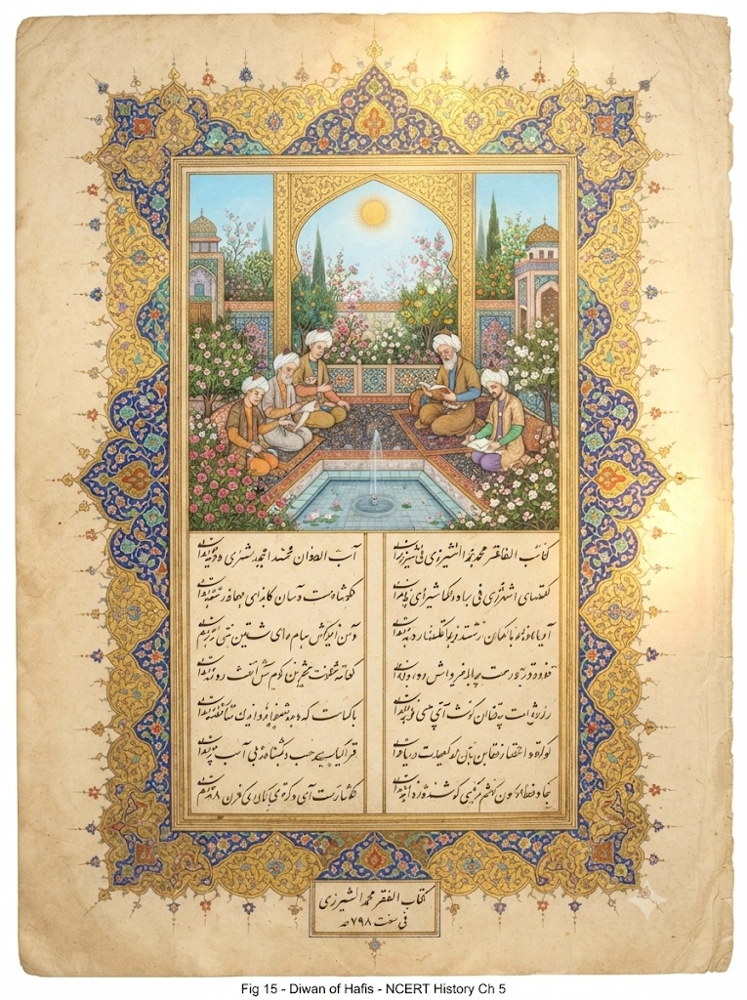
• क्या दर्शाता है: 1824 में भारत में मुद्रित प्रसिद्ध फारसी कवि हाफ़िज़ के काव्य संग्रह 'दीवान-ए-हाफिज़' (Diwan-i-Hafiz) के पन्ने।
• ऐतिहासिक महत्व: यह प्रमाण है कि भारत में छपाई प्रेस का उपयोग शास्त्रीय फारसी और अरबी साहित्य को जन-जन तक पहुँचाने में किया गया।
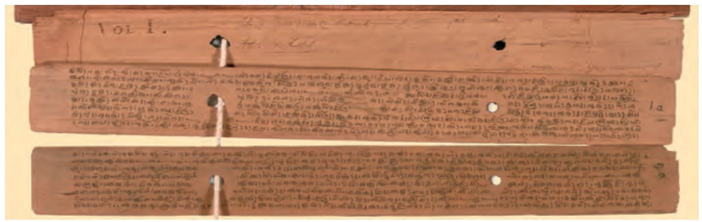
• क्या दर्शाता है: देवनागरी लिपि में हाथ से लिखी गई प्राचीन 'ऋग्वेद' की पांडुलिपि का पन्ना।
• ऐतिहासिक महत्व: भारत की मौखिक और पांडुलिपि परंपरा की समृद्धि का साक्ष्य, जिसे 19वीं सदी में प्रिंट तकनीक द्वारा स्थायी रूप से संरक्षित किया गया।
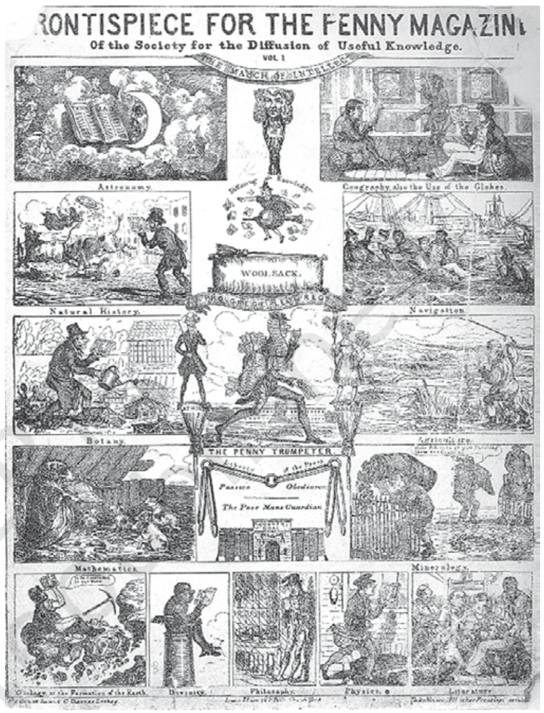
• क्या दर्शाता है: ai ch5 6 traditional indian manuscripts का ऐतिहासिक दृश्य और कलात्मक निरूपण।
• ऐतिहासिक महत्व: पाठ्यपुस्तक के इस अध्याय में विषय की गहराई और विजुअल समझ को बढ़ाने वाला महत्वपूर्ण प्रतीक।
- गोवा में पुर्तगाली मिशनरी (1556): छपाई की मशीन सबसे पहले 16वीं सदी के मध्य में गोवा में पुर्तगाली धर्म प्रचारकों के साथ आई। कोंकणी और कन्नड़ भाषा में पहली किताबें छपीं।
- जेम्स ऑगस्टस हिकी का 'बंगाल गजट' (1780): 1780 में जेम्स ऑगस्टस हिकी ने 'बंगाल गजट' (Bengal Gazette) नामक एक साप्ताहिक पत्रिका का संपादन शुरू किया। यह किसी भी भारतीय भाषा में छपने वाला पहला स्वतंत्र समाचार पत्र था।
- गंगाधर भट्टाचार्य: भारतीय द्वारा प्रकाशित पहला समाचार पत्र भी 'बंगाल गजट' था, जिसे गंगाधर भट्टाचार्य ने शुरू किया था।
19वीं सदी की शुरुआत से भारत में सामाजिक और धार्मिक मुद्दों पर तीव्र बहस छिड़ गई। मुद्रित पुस्तकों और अखबारों ने इन बहसों को आम जनता तक पहुँचाया।
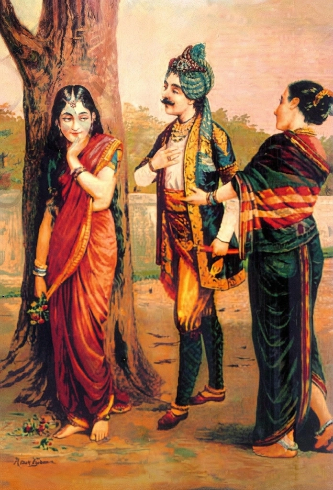
• क्या दर्शाता है: प्रसिद्ध चित्रकार राजा रवि वर्मा द्वारा रचित पौराणिक पेंटिंग (राजा ऋतुध्वज द्वारा राजकुमारी मदालसा की रक्षा)।
• ऐतिहासिक महत्व: राजा रवि वर्मा ने बंबई में लिथोग्राफिक प्रेस लगाकर देवी-देवताओं और पौराणिक कथाओं के चित्रों की लाखों सस्ती प्रतियां छापीं, जिससे कला आम भारतीय घरों के पूजाघरों तक पहुँची।
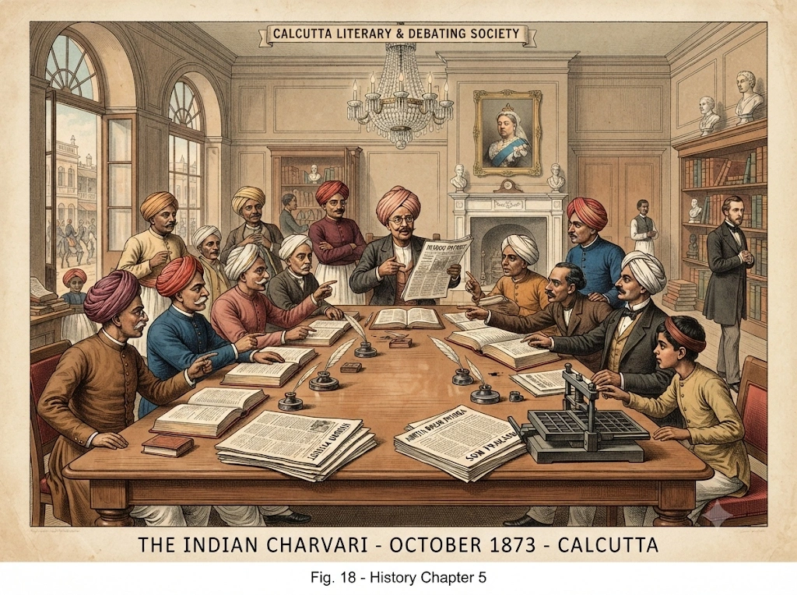
• क्या दर्शाता है: 19वीं सदी के उत्तरार्ध में प्रकाशित व्यंग्य पत्रिका 'इंडियन कैरिवैरी' (Indian Charivari) का आवरण पृष्ठ।
• ऐतिहासिक महत्व: ब्रिटिश और भारतीय समाज के पाखंड, राजनीति और रीति-रिवाजों पर तीखे हास्य-व्यंग्य (Satire) के लिए प्रिंट का उपयोग।
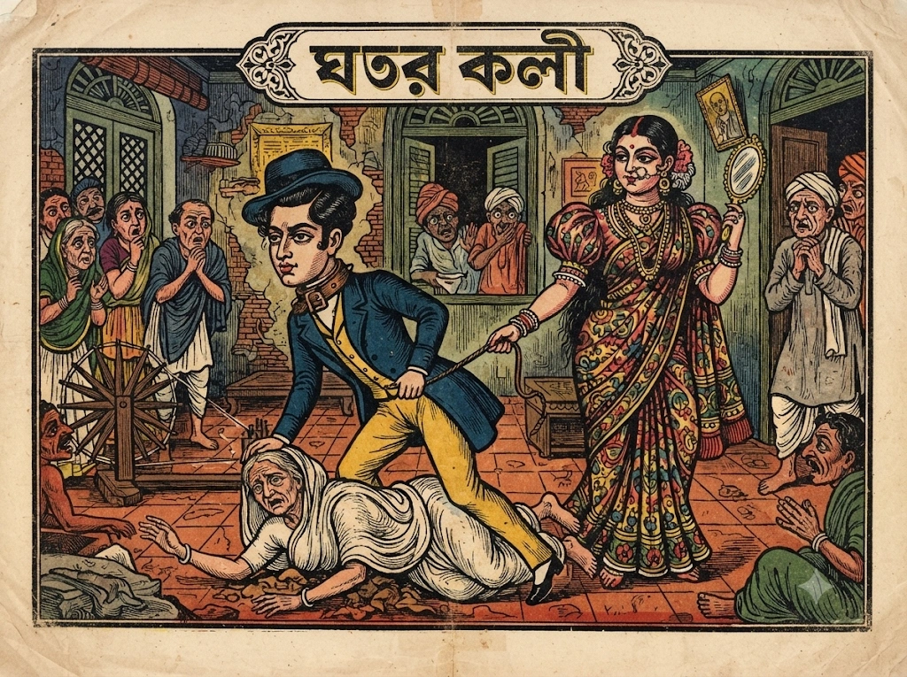
• क्या दर्शाता है: 19वीं सदी के बंगाल का प्रसिद्ध काठ-चित्र (Woodcut) 'घोर कलि' (कलयुग का अंत), जिसमें पति अपनी पत्नी को पीठ पर बैठाए है और बूढ़ी मां को जंजीर से बांधा गया है।
• ऐतिहासिक महत्व: यह प्रिंट के जरिए पारंपरिक समाज की इस चिंता को दर्शाता है कि अंग्रेजी शिक्षा से पारिवारिक मूल्य नष्ट हो रहे हैं।
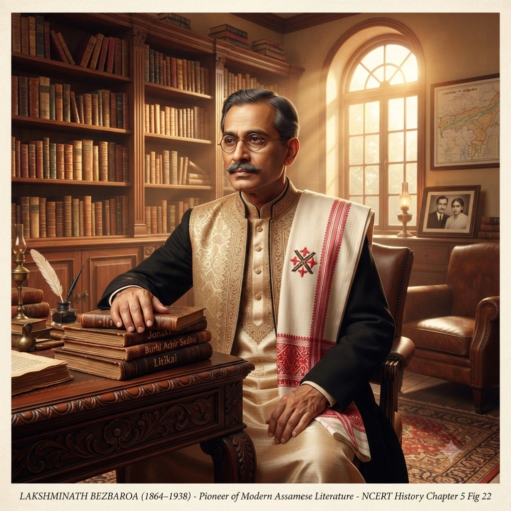
• क्या दर्शाता है: पश्चिमी पहनावे, शराब और संगीत में डूबे भारतीय 'बाबू' और उसकी पत्नी का मजाक उड़ाता व्यंग्य चित्र।
• ऐतिहासिक महत्व: प्रिंट माध्यम का उपयोग अंग्रेजों के अंधानुकरण करने वाले पश्चिमीकृत वर्ग की आलोचना करने के लिए किया गया।
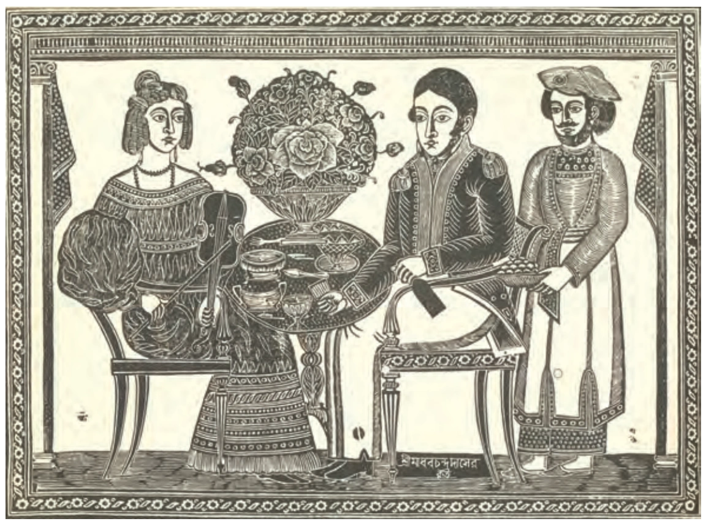
• क्या दर्शाता है: कुर्सियों पर ठाट-बाट से बैठे यूरोपीय दंपत्ति का चित्र।
• ऐतिहासिक महत्व: औपनिवेशिक शासकों की जीवनशैली और उनके सामाजिक अलगाव पर भारतीय चित्रकारों का दृष्टिकोण।
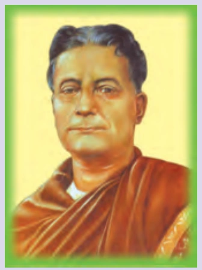
• क्या दर्शाता है: आधुनिक असमिया साहित्य के पितामह लक्ष्मीनाथ बेजबरुआ (Lakshminath Bezbaroa) का पोट्रेट।
• ऐतिहासिक महत्व: उन्होंने 'बुरुंजी' कथाओं और राष्ट्रगान 'ओ मोर अपोनार देश' जैसी रचनाओं के माध्यम से असम और भारत में राष्ट्रीय चेतना जगाई।
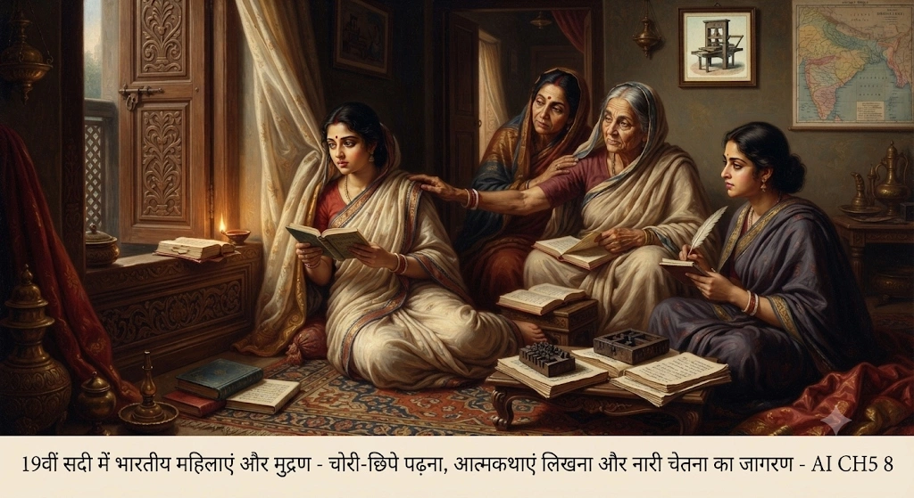
• क्या दर्शाता है: ai ch5 8 women and print reading का ऐतिहासिक दृश्य और कलात्मक निरूपण।
• ऐतिहासिक महत्व: पाठ्यपुस्तक के इस अध्याय में विषय की गहराई और विजुअल समझ को बढ़ाने वाला महत्वपूर्ण प्रतीक।
• राससुंदरी देवी (अमार जीबन - 1876): पूर्वी बंगाल की एक रूढ़िवादी गृहिणी राससुंदरी देवी ने रसोई में चोरी-छिपे पढ़ना सीखा और बंगाली भाषा की पहली पूर्ण आत्मकथा 'अमार जीबन' (Amar Jiban - 1876) लिखी।
• ताराबाई शिंदे और पंडिता रमाबाई: महाराष्ट्र की ताराबाई शिंदे ने 'स्त्रीपुरुष तुलना' (1882) लिखकर महिलाओं के प्रति उच्च जातियों के दोहरे मानदंडों पर कड़ा हमला किया।
• सस्ते प्रिंट और मजदूर: कानपुर के सूती मिल मजदूर काशीबाबा ने 1938 में 'छोटे और बड़े का सवाल' लिखा। सुदर्शन चक्र (सुदर्शन चक्र) नाम से लिखने वाले मजदूर ने **'सच्ची कविताएं'** नाम से कविताएं छापीं।
• वर्नाक्यूलर प्रेस एक्ट (Vernacular Press Act 1878): 1857 के विद्रोह के बाद ब्रिटिश सरकार ने देसी भाषाओं के समाचार पत्रों पर अंकुश लगाने के लिए 1878 में आयरिश प्रेस कानून की तर्ज पर 'वर्नाक्यूलर प्रेस एक्ट' बनाया। बाल गंगाधर तिलक के **'केसरी'** अखबार ने इसका डटकर विरोध किया।
1. काठ के तख्तों (Woodblock) की छपाई: मुद्रण तकनीक की शुरुआत चीन, जापान और कोरिया में हुई। चीन में 594 ईस्वी से अकॉर्डियन किताबें छापी जाने लगीं जो सिविल सेवा परीक्षा के उम्मीदवारों के लिए बहुत उपयोगी थीं।
2. जापान की 'डायमंड सूत्र' और 'उकियो' कला: 868 ईस्वी की 'डायमंड सूत्र' जापान की सबसे पुरानी मुद्रित पुस्तक है। 18वीं सदी में कितागावा उतामारो ने 'उकियो' (तैरती दुनिया के चित्र) नामक विजुअल आर्ट शैली को लोकप्रिय बनाया।
3. गुटेनबर्ग का यांत्रिक प्रिंटिंग प्रेस (1455): जर्मनी के योहान गुटेनबर्ग ने जैतून पेरने वाले प्रेस के आधार पर धातु के 'मूवेबल टाइप' वाला पहला प्रिंटिंग प्रेस बनाया। उनकी पहली छपी पुस्तक 'गुटेनबर्ग बाइबल' थी।
4. मार्टिन लूथर और प्रोटेस्टेंट धर्मसुधार: 1517 में मार्टिन लूथर ने कैथोलिक चर्च की कमियों पर 95 वक्तव्य छापे, जिसने प्रोटेस्टेंट धर्मसुधार की नींव रखी। लूथर ने कहा: "मुद्रण ईश्वर की दी हुई महानतम देन है।"
5. पढ़ने का जुनून (Reading Mania) और सस्ती किताबें: 18वीं सदी में यूरोप में 'पेनी चैपबुक्स' (इंग्लैंड) और 'बिब्लियोथेक ब्लू' (फ्रांस) जैसी सस्ती पुस्तकें आईं, जिससे गरीब व सामान्य नागरिक भी पढ़ने लगे।
6. मुद्रण और फ्रांसीसी क्रांति (1789): मुद्रण संस्कृति ने तर्कवाद का प्रसार किया, राजशाही की विलासिता पर व्यंग्य चित्र छापे और फ्रांसीसी क्रांति के लिए वैचारिक जमीन तैयार की। लुई-सेबेस्टियन मर्सिये ने कहा कि छापाखाना निरंकुशवाद को उड़ा देगा।
7. भारत में हस्तलिखित पांडुलिपियां: भारत में छपाई से पहले ताड़ के पत्तों और हस्तनिर्मित कागज पर संस्कृत, अरबी, फारसी व प्राकृत में समृद्ध पांडुलिपियों की परंपरा थी (जैसे ऋग्वेद, दीवान-ए-हाफिज़)।
8. भारत में प्रिंट का आगमन और 'बंगाल गजट': 1556 में गोवा में पुर्तगाली मिशनरियों द्वारा पहला प्रेस लाया गया। 1780 में जेम्स ऑगस्टस हिकी ने भारत का पहला स्वतंत्र समाचार पत्र 'बंगाल गजट' (Bengal Gazette) छापा।
9. धार्मिक सुधार और महिला रचनाकार: राजा राममोहन राय ने 1821 में 'संवाद कौमुदी' छापी। राससुंदरी देवी ने रसोई में चोरी-छिपे पढ़कर आत्मकथा 'अमार जीबन' (1876) लिखी और ताराबाई शिंदे ने 'स्त्रीपुरुष तुलना' (1882) लिखी।
10. वर्नाक्यूलर प्रेस एक्ट (1878) व राष्ट्रीय चेतना: देसी समाचार पत्रों की बढ़ती राष्ट्रीय भूमिका को दबाने के लिए अंग्रेजों ने 1878 में 'वर्नाक्यूलर प्रेस एक्ट' लागू किया। बाल गंगाधर तिलक के **'केसरी'** जैसे अखबारों ने राष्ट्रवादी चेतना को पूरे भारत में प्रज्वलित किया।